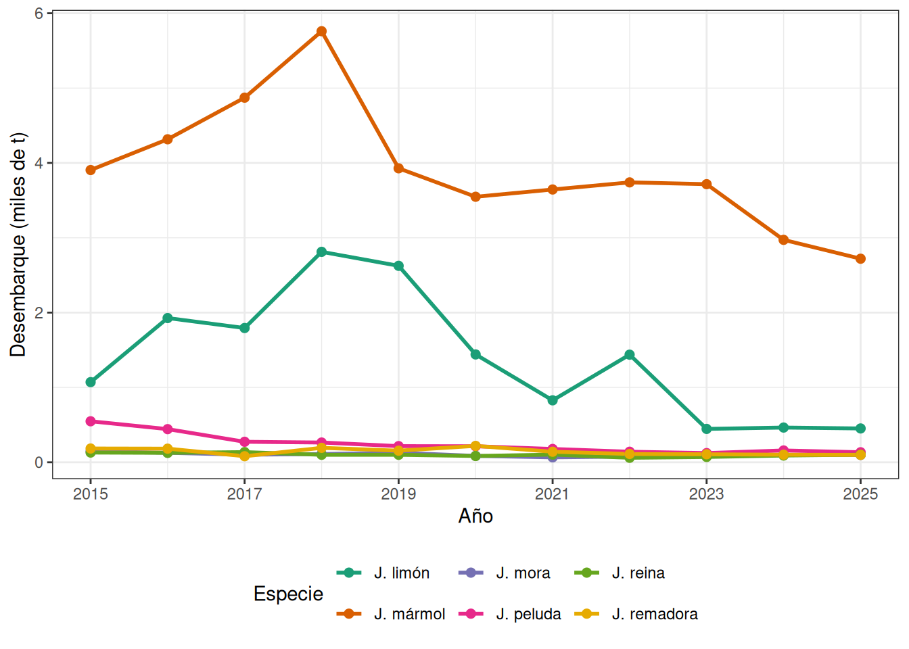
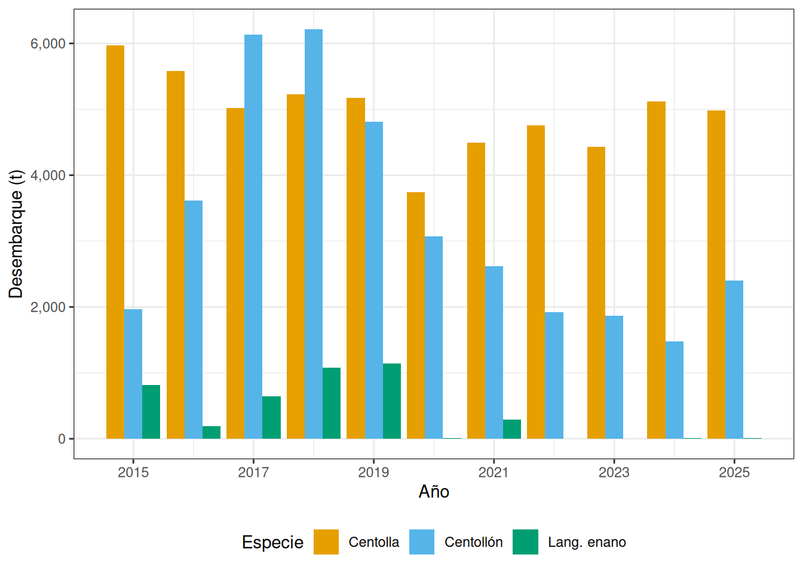
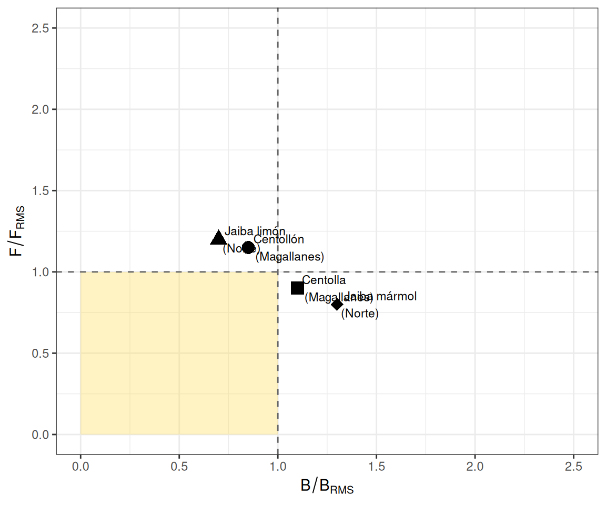

Clase 3 Crustáceos Bentónicos
Los crustáceos bentónicos constituyen un grupo diverso que habita principalmente los fondos marinos y sustratos rocosos del litoral chileno. A diferencia de las especies demersales estudiadas en el capítulo anterior, los crustáceos bentónicos como las jaibas, la centolla y el centollón presentan comportamientos y estrategias reproductivas asociadas a hábitats estructuralmente complejos: fondos rocosos, praderas de macroalgas, archipiélagos y canales del sur de Chile. En este capítulo se analizan las principales pesquerías de estos recursos: las jaibas (Cancer spp.), la centolla (Lithodes santolla), el centollón (Paralomis granulosa) y el langostino colorado enano (Grimothea monodon), que constituye un morfotipo de especial interés biológico y pesquero.
3.1 Jaibas
Las jaibas son braquiuros (cangrejos de cuerpo ancho) que conforman las pesquerías de crustáceos más diversas del litoral chileno. Las principales especies comerciales pertenecen al género Cancer (familia Cancridae):
- Jaiba mármol (Cancer coronatus sin. Metacarcinus edwardsii): es la especie de mayor importancia comercial, distribuida desde Arica hasta el Canal de Beagle en fondos de 0 a 200 m. Presenta el caparazón de color marrón con manchas blancas y alcanza hasta 20 cm de ancho cefalotorácico.
- Jaiba limón (Cancer porteri): de menor tamaño, distribuida desde Atacama hasta la Región de Los Lagos. Habita fondos de 5 a 80 m y coexiste con la jaiba mármol en gran parte de su distribución.
- Jaiba peluda (Cancer setosus): distribuida desde Perú hasta el norte de Chile, prefiere sustrato rocoso y presenta abundante vellosidad en las quelas.
- Jaiba mora (Homalaspis plana): especie de color oscuro característico, asociada a fondos rocosos del submareal.
- Jaiba reina (Cancer edwardsii): de mayor profundidad (hasta 300 m), con caparazón de forma ovalada.
- Jaiba remadora (Portunus xantusii): pelagobentónica, con patas traseras en forma de remo adaptadas a la natación.
3.1.1 Biología de jaibas
Los jaibas son organismos con crecimiento por mudas (ecdisis). En hembras, la copulación ocurre inmediatamente después de la ecdisis, cuando el caparazón está blando; el macho sujeta a la hembra hasta que el caparazón se endurece. Las hembras almacenan esperma en espermatecas para fertilizaciones futuras. El desove produce masas de huevos que la hembra porta bajo el abdomen (hembras ovígeras) por varios meses. Las larvas pasan por estadios zoea y megalopa antes de asentarse como juveniles bentónicos.
La estructura de tallas de los desembarques se mide como ancho de caparazón (AC). La talla mínima legal varía por especie y región, siendo 110 mm AC para la jaiba mármol en la Zona Centro-Sur. Los artes de pesca autorizados son trampas y buceo con escafandra o apnea.
3.1.2 Pesquería de jaibas
Las pesquerías de jaibas son principalmente artesanales y se distribuyen a lo largo de todo el litoral. La jaiba mármol concentra el mayor desembarque nacional, seguida por la jaiba limón. Las capturas se realizan con trampas cilíndricas o cuadradas cebadas con restos de pesca, así como mediante buceo autónomo y apnea.

Figure 3.1: Desembarque de jaibas por especie en Chile, 2015-2025 (SERNAPESCA).
3.2 Centolla y Centollón
La centolla (Lithodes santolla) y el centollón (Paralomis granulosa) son litódidos (familia Lithodidae) de gran importancia comercial, concentrados principalmente en la Región de Magallanes y Antártica Chilena, con poblaciones menores en Aysén y Los Ríos. La pesquería tiene arraigo histórico desde 1928 y es de carácter artesanal.
3.2.1 Biología de centolla
La centolla (Lithodes santolla) es un crustáceo de cuerpo asimétrico que puede alcanzar hasta 200 mm de longitud cefalotoráxica (LC) en machos adultos. Habita fondos blandos y duros entre 0 y 200 m de profundidad, en aguas frías y bien oxigenadas de canales y fiordos patagónicos. Presenta dimorfismo sexual marcado: los machos son significativamente más grandes que las hembras.
El crecimiento de la centolla es discontinuo (por mudas). La frecuencia de las mudas disminuye con la edad; los individuos adultos mudan aproximadamente una vez al año, en primavera-verano. La fecundidad varía entre 3.000 y 30.000 huevos por hembra. Las hembras son ovígeras entre mayo y octubre, portando la masa de huevos bajo el abdomen.
El centollón (Paralomis granulosa) presenta similares características ecológicas, coexistiendo con centolla en Magallanes. Es de menor tamaño (machos hasta 140 mm LC) y tolera aguas con menor contenido de oxígeno. Su pesquería se desarrolla en las mismas áreas que la centolla, con temporadas complementarias.
3.2.2 Pesquería y regulaciones
La pesquería de centolla aplica la estrategia 3S (Season–Sex–Size):
- Season (temporada): pesca autorizada entre el 1 de julio y el 30 de noviembre de cada año.
- Sex (sexo): se prohíbe el desembarque y comercialización de hembras de centolla; solo se pueden extraer machos.
- Size (tamaño): talla mínima legal de 120 mm de longitud cefalotoráxica (LC) para machos.
Adicionalmente, el único arte de pesca autorizado son las trampas y los ejemplares machos deben ingresar a las plantas de proceso en estado integral (vivos). La inscripción en el Registro Pesquero Artesanal de la XII Región se encuentra suspendida, limitando el número de actores activos. La pesquería es compartida con Argentina, lo que añade complejidad a su administración dado que ambos países aplican medidas de manejo distintas.
El monitoreo pesquero a cargo del IFOP se ha realizado desde 2007 en zonas de pesca y centros de desembarque de Magallanes. La topografía costera del extremo sur —islas, archipiélagos, fiordos y canales— determina que las capturas se concentren en zonas de pesca históricas o recurrentes.
3.3 Langostino Colorado Enano: un Morfotipo
El langostino colorado (Pleuroncodes monodon, sinónimo: Grimothea monodon) se conoce principalmente como una especie demersal (capturada con arrastre). Sin embargo, aparece con frecuencia en las capturas de cerco de anchoveta en la zona norte de Chile y en el norte del Perú, con una morfología notablemente diferente. Esta forma pelágica, denominada comúnmente langostino enano, fue objeto de debate taxonómico hasta que análisis genéticos demostraron que ambas formas constituyen una misma unidad genética.
3.3.1 Plasticidad fenotípica heterocrónica
Las diferencias morfológicas entre el langostino demersal y el langostino enano se explican por plasticidad fenotípica heterocrónica: la capacidad del organismo de alterar su morfología y desarrollo en respuesta a condiciones ambientales. El factor ambiental más probable es la distribución de aguas con mínimo de oxígeno (ZMO), que modifica la trayectoria ontogénica de los individuos.
La heterocronía implica un cambio en el tiempo de desarrollo que conduce a diferencias en tamaño y forma respecto al plan corporal ancestral. En el langostino enano, se observa una madurez sexual adelantada a tallas menores y proporciones corporales diferentes (cefalotórax más pequeño en relación con el abdomen).
3.3.2 Importancia pesquera del langostino enano
En Chile, el langostino enano (Grimothea monodon) aparece como fauna acompañante en la pesca de cerco de anchoveta en la I y II Región, con un límite legal de captura incidental del 3%. En los años El Niño aumenta su disponibilidad en el norte de Chile por desplazamientos desde Perú. En Perú, se han estimado biomasas acústicas de hasta 3,4 millones de toneladas, ocupando entre 30 y 40 m de profundidad en aguas menores de 18 °C y salinidades entre 34,7 y 35,1.
Se registran también varazones de langostino enano en playas del norte de Chile, asociados a eventos oceanográficos (surgencia intensa, presencia de ZMO superficial).
3.4 Desembarques Históricos de Crustáceos Bentónicos
Los desembarques de centolla, centollón y langostino enano presentan tendencias diferenciadas durante el período 2015-2025:

Figure 3.2: Desembarque de centolla, centollón y langostino enano en Chile, 2015-2025 (SERNAPESCA).
| Año | Centolla | Centollón | J. mármol | J. limón | Lang. enano |
|---|---|---|---|---|---|
| 2.015 | 5.973 | 1.966 | 3.905 | 1.071 | 819 |
| 2.016 | 5.583 | 3.614 | 4.316 | 1.927 | 189 |
| 2.017 | 5.024 | 6.132 | 4.872 | 1.794 | 647 |
| 2.018 | 5.226 | 6.216 | 5.760 | 2.812 | 1.077 |
| 2.019 | 5.173 | 4.809 | 3.928 | 2.625 | 1.143 |
| 2.020 | 3.741 | 3.068 | 3.548 | 1.441 | 8 |
| 2.021 | 4.494 | 2.621 | 3.645 | 828 | 290 |
| 2.022 | 4.758 | 1.925 | 3.740 | 1.438 | 0 |
| 2.023 | 4.432 | 1.866 | 3.716 | 446 | 5 |
| 2.024 | 5.123 | 1.480 | 2.972 | 464 | 8 |
| 2.025 | 4.984 | 2.399 | 2.720 | 452 | 8 |
La centolla ha mantenido desembarques relativamente estables entre 3.741 y 5.973 t, con una caída notoria en 2020 (asociada a restricciones sanitarias por COVID-19). El centollón muestra mayor variabilidad, con un pico entre 2017 y 2018 (> 6.000 t) y una caída sostenida hasta 2024 (1.480 t). El langostino enano presenta desembarques muy irregulares, con años de capturas significativas (> 1.000 t en 2018-2019) y períodos con registros casi nulos.
3.5 Evaluación de Biomasa y Puntos Biológicos de Referencia
La evaluación de biomasa para centolla y centollón en Magallanes se realiza mediante modelos de producción excedente o modelos de dinámica de tallas (modelo de Leslie-DeLury o captura por unidad de esfuerzo, CPUE). La métrica principal es la captura por trampa (CPT), que actúa como índice de abundancia relativa.
\[\hat{B} = \frac{C}{a \cdot q}\]
donde \(C\) es la captura total, \(a\) es el esfuerzo de pesca (número de trampas × lances) y \(q\) es el coeficiente de capturabilidad. Los Puntos Biológicos de Referencia (PBR) estándar son:
| Punto de Referencia | Descripción | Interpretación |
|---|---|---|
| B₀ (100%) | Biomasa virginal: estado del recurso sin explotación | Referencia teórica de capacidad de carga poblacional |
| B_RMS (40% B₀) | Biomasa de máximo rendimiento sostenible: objetivo de manejo | Nivel de biomasa que permite maximizar el rendimiento a largo plazo |
| B_LÍMITE (20% B₀) | Biomasa mínima aceptable: umbral de colapso pesquero | Por debajo de este umbral la pesquería se considera sobreexplotada |
3.6 Estado de las Pesquerías de Crustáceos Bentónicos

Figure 3.3: Diagrama de Kobe para pesquerías de crustáceos bentónicos de Chile. Los colores indican el estado de la pesquería: verde (subexplotado), amarillo (en desarrollo), rojo (sobreexplotado).
| Pesquería | B/B_RMS | F/F_RMS | Estado |
|---|---|---|---|
| Centolla (Magallanes) | 1.10 | 0.90 | Subexplotada |
| Centollón (Magallanes) | 0.85 | 1.15 | Sobreexplotada |
| Jaiba mármol (Norte) | 1.30 | 0.80 | Subexplotada |
| Jaiba limón (Norte) | 0.70 | 1.20 | Sobreexplotada |
Nota: El diagrama de Kobe y los valores de estado corresponden a una representación esquemática con fines pedagógicos. Los valores reales de biomasa relativa y mortalidad por pesca se obtienen de los informes de seguimiento pesquero de IFOP y SUBPESCA.
3.7 Síntesis
Las pesquerías de crustáceos bentónicos chilenos presentan características particulares que las distinguen de las pesquerías pelágicas y demersales:
La pesquería de centolla es la más emblemática del extremo sur, con tradición histórica de casi un siglo. Su administración mediante la estrategia 3S (temporada, sexo y talla) ha permitido mantener capturas relativamente estables, aunque la condición de pesquería compartida con Argentina y la dependencia de zonas históricas de pesca representan riesgos de manejo.
Las pesquerías de jaibas son las de mayor diversidad específica y extensión geográfica, con la jaiba mármol como especie dominante a nivel nacional. La presión pesquera sobre la jaiba limón ha aumentado notablemente en los últimos años con signos de sobreexplotación en algunas regiones.
El langostino enano (Grimothea monodon) ilustra un fenómeno biológico fascinante: la plasticidad fenotípica heterocrónica en respuesta a gradientes ambientales (ZMO). Aunque sus desembarques formales son bajos, su importancia ecológica en el ecosistema del norte de Humboldt es significativa.
3.8 Glosario
Braquiura: infraorden de crustáceos decápodos caracterizados por tener el abdomen reducido y plegado bajo el cefalotórax; incluye a las jaibas y cangrejos.
Caparazón: estructura rígida que cubre el cefalotórax de los crustáceos, formada por calcificación de la cutícula.
CPUE (Captura por Unidad de Esfuerzo): índice de abundancia relativa que relaciona la captura con el esfuerzo de pesca; se utiliza como proxy de la biomasa disponible.
Ecdisis: proceso de muda del exoesqueleto en crustáceos, necesario para el crecimiento; durante la muda el animal queda vulnerable.
Estrategia 3S: sistema de regulación pesquera basado en temporada (Season), sexo (Sex) y talla (Size); aplicado en la pesquería de centolla.
Hembra ovígera: hembra que porta la masa de huevos bajo el abdomen; en la mayoría de las pesquerías se protegen de la captura.
Heterocronía: cambio evolutivo en el tiempo o la tasa de desarrollo de un organismo respecto a sus ancestros; genera variaciones morfológicas entre individuos de la misma especie.
Litódido: familia de crustáceos decápodos (Lithodidae) de cuerpo casi simétrico con un abdomen asimétrico reducido; incluye centolla y centollón.
Longitud cefalotoráxica (LC): medida estándar usada en centolla y centollón, correspondiente a la longitud del caparazón desde el rostro hasta el margen posterior.
Morfotipo: variante morfológica dentro de una misma especie, determinada por condiciones ambientales y no por diferencias genéticas.
Plasticidad fenotípica: capacidad de un genotipo para expresar distintos fenotipos en respuesta a variaciones ambientales.
Talla mínima legal (TML): tamaño mínimo al que un organismo puede ser extraído legalmente; busca proteger a los juveniles y garantizar la reproducción.
Trampa: arte de pesca pasiva, tipo nasa o cilindro metálico cebado, utilizado en la captura de jaibas, centolla y centollón.
Zona Mínima de Oxígeno (ZMO): capa de la columna de agua con concentraciones muy bajas de oxígeno disuelto; influye en la distribución vertical de organismos marinos, incluyendo la forma pelágica del langostino enano.
3.9 Preguntas de Autoevaluación
Nivel básico:
- ¿Cuáles son las dos principales especies de jaibas comerciales en Chile y a qué género pertenecen?
- ¿Qué significan las tres “S” de la estrategia 3S aplicada en la pesquería de centolla?
- ¿Cuál es la talla mínima legal de extracción para machos de centolla?
Nivel intermedio:
- Explique por qué en la pesquería de centolla se permite solo la extracción de machos. ¿Qué implicaciones tiene esto para la estructura de la población?
- ¿Qué es la plasticidad fenotípica heterocrónica y cómo explica la existencia del morfotipo “langostino enano” en la misma especie que el langostino colorado demersal?
- Compare los patrones de desembarque de centolla y centollón en el período 2015-2025. ¿Qué factores podrían explicar las diferencias observadas?
Nivel avanzado:
- Analice las ventajas y limitaciones de utilizar la captura por trampa (CPT) como índice de abundancia en la evaluación de la pesquería de centolla. ¿Cuáles son los supuestos que deben cumplirse?
- En el diagrama de Kobe, la pesquería de centollón aparece en el cuadrante de sobreexplotación. Proponga al menos tres medidas de manejo adicionales a las ya existentes para recuperar la pesquería. Justifique su propuesta con criterios biológicos y socioeconómicos.
- La pesquería de centolla es compartida entre Chile y Argentina. Discuta los desafíos para la co-gestión transfronteriza de un recurso bentónico migratorio y proponga un marco de gobernanza basado en la literatura disponible.
3.10 Referencias
Daza, E., Almonacid, E., y Hernández, R. (2020). Seguimiento Pesquerías Crustáceos Bentónicos, 2019: Recursos Centolla y Centollón, Región de Magallanes y Antártica Chilena. Informe Final Convenio de Desempeño 2019. Instituto de Fomento Pesquero (IFOP). 150 pp.
Mora, C. (2023). Dinámica poblacional de centolla (Lithodes santolla) en bahía Nassau, Magallanes. Tesis de Magíster en Ciencias Pesqueras, Universidad de Concepción. 98 pp.
Pinochet, J., Cubillos, L.A., y colaboradores. (2022). Evaluación del estado de explotación de crustáceos bentónicos en Chile austral. Latin American Journal of Aquatic Research, 50(3), 350-365.
SERNAPESCA. (2025). Anuario Estadístico de Pesca y Acuicultura 2025. Servicio Nacional de Pesca y Acuicultura. Valparaíso, Chile.
SUBPESCA. (2024). Cuota global anual de captura para centolla y centollón, Región de Magallanes 2024. Resolución Exenta. Subsecretaría de Pesca y Acuicultura. Valparaíso.